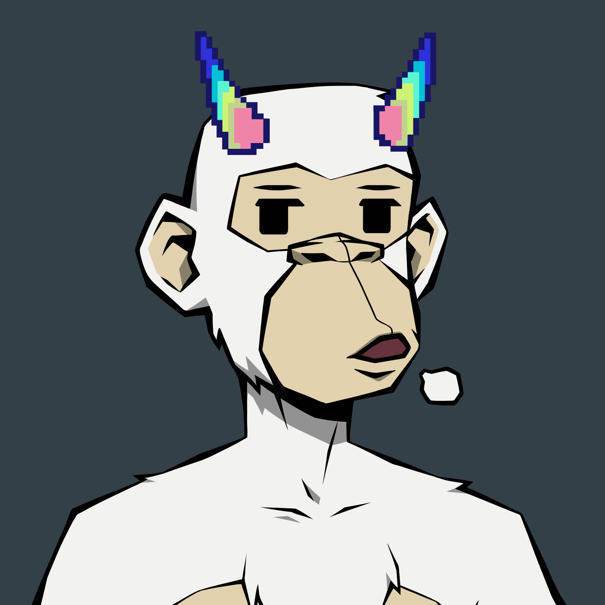

0xSitta Resume (anon) version - Web Dev Capstone Project 1

Personal Summary
Experienced (project) manager & former management consultant. Currently full-time crypto & Web3, learning (web) development on the side. Current focus on frontend and a bit of Python.
Education
Msc. Corporate communication @ Dutch University
BA. Communication & Information Sciences @ Dutch University
Work Experience
Project manager & product owner at largest Dutch ecommerce player
Responsible for large number of process (re)design projects
Product Owner for several internal HR IT solutions
Management & Strategy Consultant at large international professional services firm
Strategic HR transformation
Process optimization
Data driven HR
IT Consultant at large international professional services firm